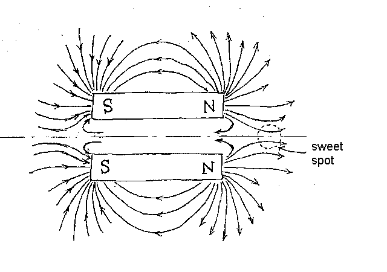
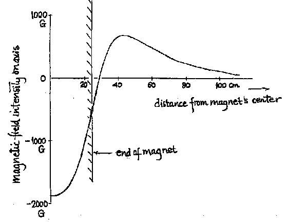

|
|
June 22, 1999 Unilateral magnets: An idea and some history Dear Dr. Shapiro, We at New Mexico Resonance still like to do "odd-ball" NMR. Our "normal" NMR studies of complex fluid flows is odd enough but we are now interested in outside-the-laboratory NMR in weak magnetic fields. Because of the novelty, we will embellish our project description with some history as we know it; it is incomplete but, we hope, interesting. Due to space limitations, we will only mention, in passing, "sophisticated" experiments that are essentially laboratory experiments done under severe conditions such as MRI [J. Stepisnik, et al., MRM 15, 386 (1990)] and PGSE diffusion measurements [P. T. Callaghan, et al., RSI 68, 4263 (1997)] in earth’s field. We will also not cover bore-hole devices that are extensively used by oil industry. Reference is made to a comprehensive description by Bob Kleinberg in Encyclopedia of Nuclear Magnetic Resonance. We got our idea, however, from one of the bore-hole instruments [R. L. Kleinberg, et al., JMR 97, 466 (1992)]. They use a pair of permanent magnet slabs as shown in the sketch of a transverse cross-section. A pair of magnets arranged in that way will have a region removed from each set of poles where the field lines converge before diverging, thus providing a local maximum (which is actually a saddle point). The magnets are arranged in such a way that NMR signals can be obtained from a line parallel to but outside the bore-hole.  Consider the arrangement in the sketch to be of a pair of bar magnets (rather than slabs that extend out of the paper). Now add additional identical pairs, rotated about the two-fold axis to get a stronger field at the sweet spot. Thus, the permanent magnet pairs will lie within a hollow cylinder whose diameter is equal to the separation between the bar magnets. The strongest field will result when the hollow cylinder is 100% filled with the magnetic material with opposite ends of the cylinder being opposite poles. There are many variants to this basic idea: nested cylinders, an additional dipole at the center, pairing up these things to make an "open architecture" magnet, etc. We present computer simulations of a hollow tube of NdFeB that is 50 cm long with outer diameter 60 cm and wall thickness 10 cm. The sketch below shows the magnetic field along the axis with the origin at the center of the magnet. It is negative inside the tube but reaches a maximum of 675 gauss, 19.4 cm past the end of the cylinder. The distance to the sweet spot scales with the overall size of the tube and the field strength at the sweet spot is independent of the magnet size if everything, including the amount of magnetic material, scales.
 We are designing a prototype, not with a solid hollow cylinder of magnetic material but with "columns" of 5 x 5 x 2.5 cm NdFeB blocks that are commercially available. We hope to make a magnet of overall cross-section of 40 cm with a remote spot around 15 cm past the end of the magnet. The magnet will be mounted under a table so we can place samples on top. We will not cover the subject of the rf coil, in this note. So, what is the history of remote NMR and what are the potential uses for such a magnet? Closely related past applications include several projects at Southwest Research Institute (SwRI) and recent applications of NMR MOUSE from the Aachen group. The SwRI efforts, initiated by the late Bill Rollwitz, included a tractor-driven NMR device that monitored moisture just below the ground surface as well as an instrument that monitored drying of concrete. [Design News, May 5, 1986: One-sided NMR sensor system.measures soil/concrete moisture.] Other SwRI applications include mine detection and aging and moisture measurements in asphalt. The applications that demonstrate unique advantage of the MOUSE include examination of car tires (even with steel cords!) and thin PVC coatings on iron sheets (!). [See, for example, Magn. Reson. Imaging 16, 479-484 (1998).] The SwRI and Aachen devices are essentially U-shaped magnets (similar to horse-shoe magnets) with a surface coil between the ends of the U. The maximum in the field of a U-shaped magnet along the symmetry axis is too close to the end to be useful. Therefore, these instruments are designed to detect the NMR signal in the decaying part of the field, similar to stray-field NMR (STRAFI). A Larmor frequency is chosen to localize the signal at a distance which is a relatively small fraction of the overall size of the magnet. For example, the SwRI devices were designed to detect moisture ~6 cm below the surface. More than 25 years ago, there were proposals also from SwRI for unilateral magnets that projected a uniform, i.e., with first derivative equal to zero, field to one side. One design consisted of two identical circular loops of wire coaxially displaced from each other and carrying currents in opposite directions. The fields from the loops subtract differently at different distances along the axis, resulting in a local maximum outside the pair of loops. Alan Rath came up with an "inside-out-Helmholtz (IOH)" design in his thesis some years back. [RSI 56, 402 (1985).] It uses the fact that the magnetic field along the axis of a circular loop has an inflection point at ½ of the radius. [The Helmholtz coil uses two identical loops separated by a radius so the inflection points from the two loops overlap, making the first three derivatives zero.] The IOH design takes two unequal size loops, axially offset from each other so that the inflection points coincide on one side of the pair (rather than between the loops). The currents flow in opposite directions and their magnitudes are adjusted to make the first derivatives equal and opposite. The second derivatives are zero by definition so the first nonzero derivative is the third. This magnet has never been built. Because the formalism holds for an idealized loop of wire, the effect is not so clean for any real wires with significant cross-sections. There have been other efforts at unilateral NMR as reflected by some US patents, e.g., Pissanetzky, 1995 (5,382,904) and Pulyer, 1998 (5,744,960). It is clear that unilateral magnets can not be as homogenous nor generate as strong a field as "bilateral" magnets because they sacrifice bilateral symmetry. Therefore, the most appropriate uses, at least for the time being, are to detect whether something is there or not and how much is there. Another use would be to monitor changes rather than make absolute measurements. Applications include "remote" sensing of materials behind barriers for reasons of extreme temperatures, toxicity, sensitivity to air, geometrical confinement for transport or storage, etc., as well as large objects that will not fit into a magnet. Another possibility is to pair these unilateral devices and hope for a very wide-gap magnet with good field homogeneity. In summary, our "invention" advances the art of remote sensing NMR by significantly increasing the relative distance out to the sweet spot. Several hundred gauss can be obtained at approximately 1/3 of the diameter along the axis. The field homogeneity and the localization at the sweet spot are not the greatest because it is only a saddle point. However, these parameters can be improved with shim coils and with rf coils that have different field profiles than the magnet. We thank Armando De Los Santos for providing a summary of SwRI activities in this area over the past 25 years.
Sincerely, Eiichi Fukushima and Jasper Jackson |